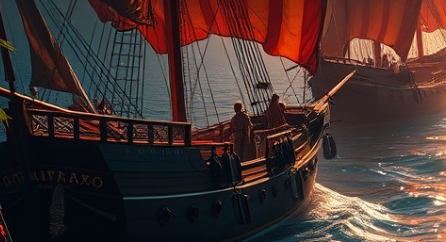

Bienvenido a Las Leyendas de Borinquen
Sumérgete en un mundo lleno de mitos, héroes y magia que definen nuestra historia y cultura.
Conoce más sobre nosotrosExplora los Momentos Clave
La Gran Tormenta
Se parte de las diversas adversidades por enfrentar.
Las Leyendas
Viaja en el tiempo y explora los mitos y relatos que marcaron la historia.

Los Escenarios
Sumérgete en los distintos escenarios y ambientes de nuestra historia.